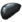

Fobos
- Wpis w Kodeksie - Fobos od wieków pozostaje terenem spornym. Potyczki pomiędzy Grineer i Corpus mają miejsce zarówno na orbicie, jak i na powierzchni tego księżyca Marsa. Nurtujące pytania odnośnie tej naturalnej satelity pozostają bez odpowiedzi, gdyż badania ciągle spychane są na dalszy plan przez niekończące się działania zbrojne.
- Surowce które występują na planecie:
 Rubedo
Rubedo Morfyt
Morfyt- Plastydy
-  Stalowa Płyta
- Występujący boss: Sierżant
Fakcje i typy wrogów
 Corpus
Corpus- Załogant
- Elitarny Załogant
- Załogant z Elektropałką
- MOA Hybryda
- MOA
- Sejsmiczny MOA
- Dron Oxium
- Technik Corpus
- Niwelujący Załogant
 Grineer
Grineer- Rzeźnik
- Elitarny Szturmowiec
- Szturmowiec
- Poszukiwacz
- Spopielacz
- Żołnierz
- Ciężkozbrojna
- Podpalacz
- Kanonier
- Pani Hyekków
- Maniakalny Grineer
- Taran
- Skoczek
- Wybuchowy Biegacz
- Uzdrawiający Starożytny
- Pełzacz
- Elektryczny Pełzacz
- Zakłócający Starożytny
- Toksyczny Starożytny